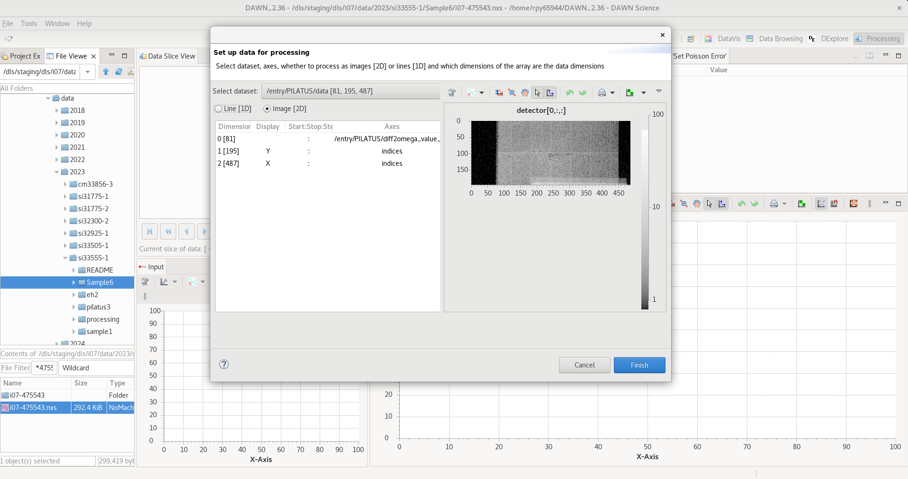
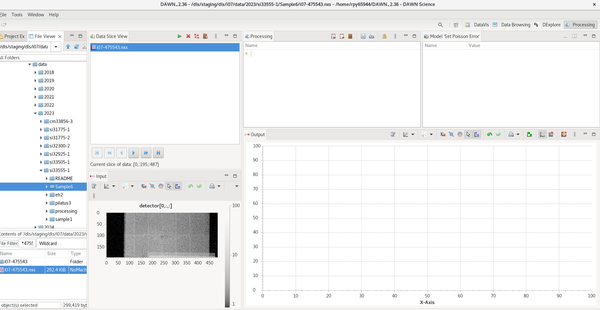
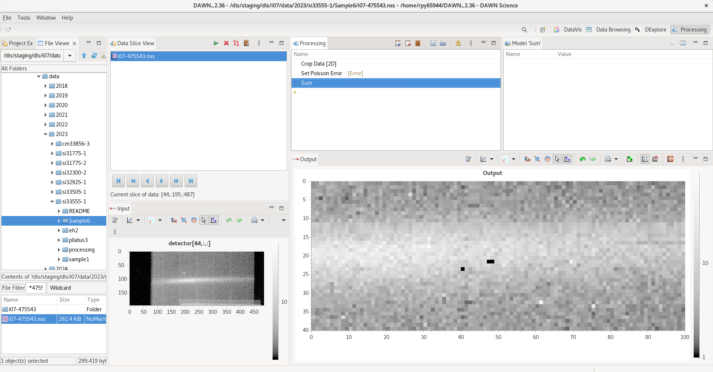
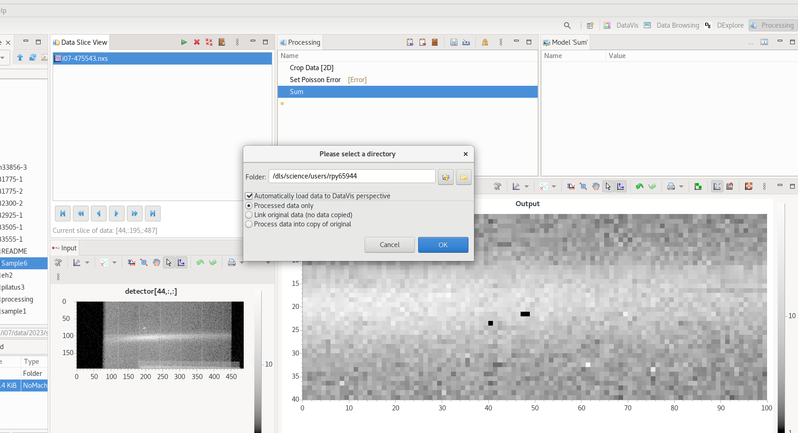
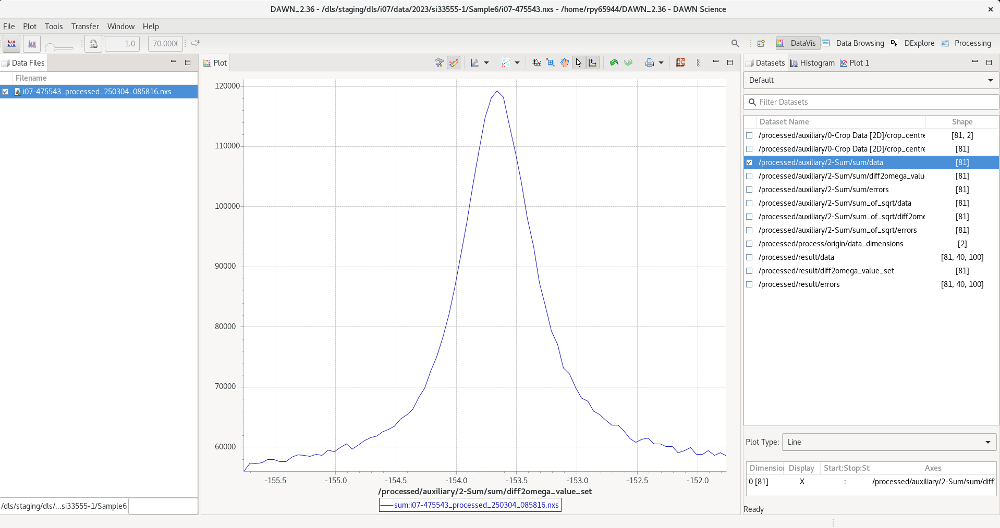
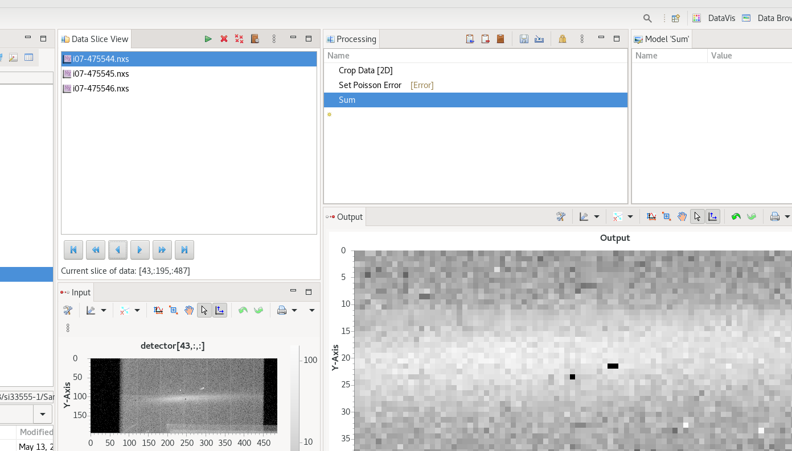
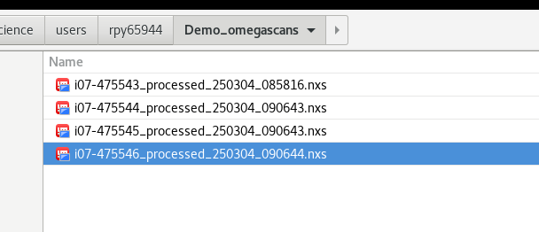
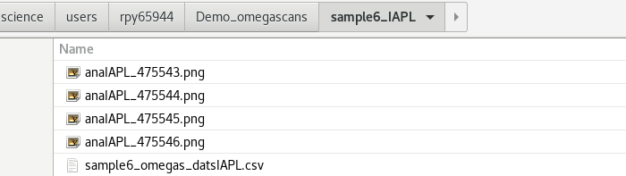
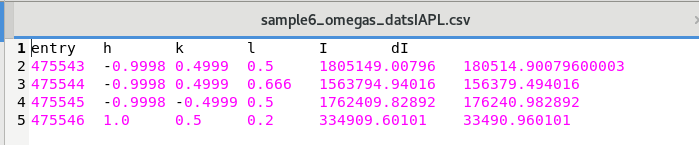
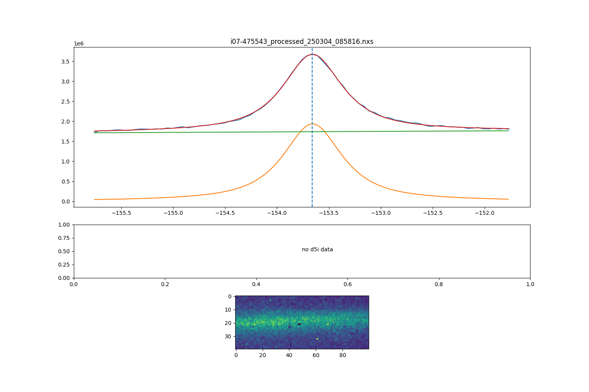

Guide for processing inplane omega scans¶
Analysis of omega scans consists of the following steps
extract intensity profiles - using DAWN at Diamond¶
{kind=link}
{kind=link}
use the file browser panel on the right to navigate to your scan, and then double click to load it. This will open the dialog window show below – if the first image is being displayed it has read the data file correctly, and press finish.
{kind=link}
This will then show your scan in the Data slice view, with a plot of the image selected in the plot underneath.
{kind=link}
- To carry out the data reduction , first add in steps to create a processing pipeline. The three steps needed are:
crop data [2d] : selects a specific region of interest within the image
set Poisson error : chooses to use counting statistics for the error calculation
Sum : does a simple sum of all pixels within the ROI
Having add these three steps and selected the ROI (xstart,xend,ystart,yend), your dawn window should now look like this
{kind=link}
now click the green triangle in the Data Slice view (circled in red in image below) to start the processing pipeline. This will ask for an output directory to save the data to, and you can check ‘Automatically load data to DataVis perspective’ if you want to immediately view the data in DAWN.
{kind=link}
Click ok and a short progress bar will appear showing how far the processing has got. Once finished the progress bar window will disappear. To view in DAWN select the DataVis perspective tab in the top right. The dataset should be in the list on the lefthand side – select the tickbox to choose to plot it, and then tick ‘/processed/auxiliary/2-Sum/sum/data’ option on the righthand side to display the profile.
{kind=link}
To carry out the processing on many scans in a batch process you simply add more scans to the Data Slice view . Add all scans from the same dataset, and ensure the box defined in Crop Data is suitable for all scans – increase the box size if necessary. It should cover all the height of the signal vertically, and most of the signal horizontally as well – if you have a very broad signal which is very wide, try to gauge where most of the signal falls within (~90%). A wider ROI will broaden the peak you obtain from the images, so the most important thing is to use exactly the same size ROI box for all scans within one dataset.
{kind=link}
You should now have a folder full of the reduced data scans
{kind=link}
Download and open up the jupyter notebook omega_scan_fitting.ipynb download notebook
fill in the correct path information and run the cells to fit the DAWN profiles. This should create a subfolder and fill it with a dataset and plots to show the fitting of each scan
{kind=link}
here will be a csv file with your data set with the ‘h,k,l,I,dI’ to use with ROD
{kind=link}
each image will show the fit done for each scan
{kind=link}
Thefirst plot shows the following:
green line : linear background
orange line : fitting function e.g pseudo-voigt
red line : combined background + function
blue line : data points
dotted line : value where image in plot 3 is taken
The middle plot will show the d5i monitor values if available in data. The last plot will show the cropped image for the maximum intensity peak position, show with the vertical dotted line in the top plot